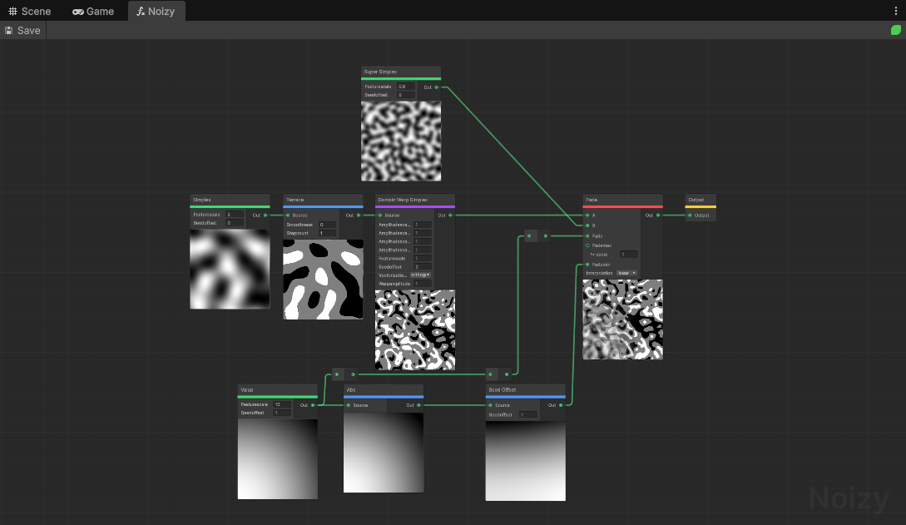
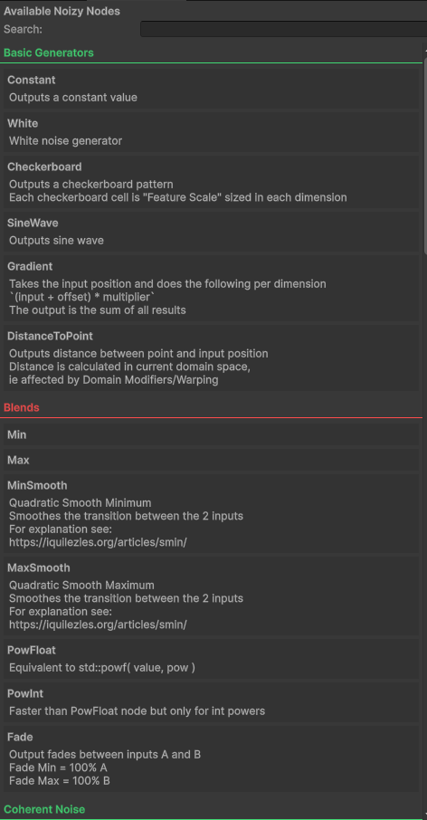
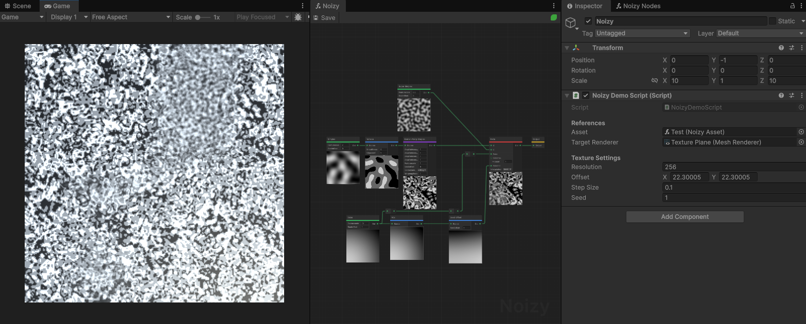
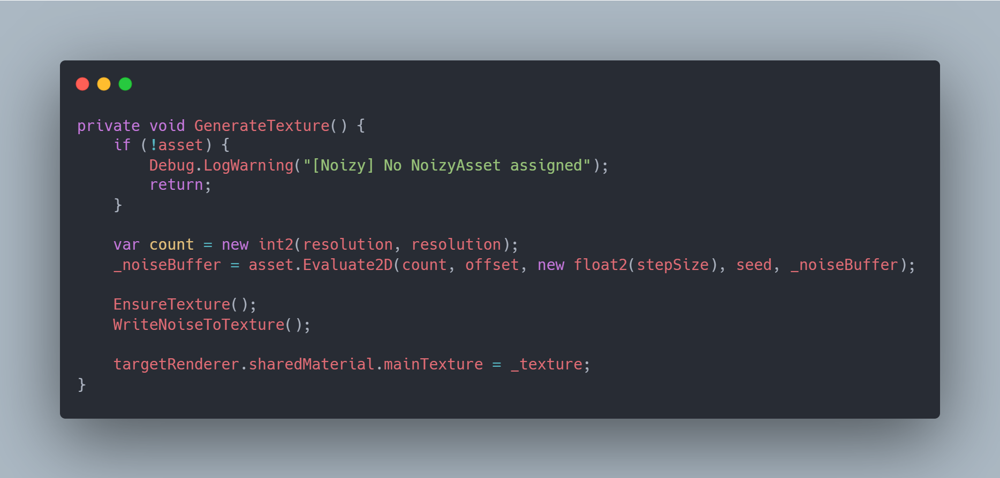

Boxey Dev
Noizy
A visual node-based noise editor for Unity
Overview
Procedural noise, without the guesswork
Noizy is a visual node-based editor for Unity. It is built on top of FastNoise2. Instead of writing code by hand to control your noise in a way that you can't even see what you're doing or changing line by line, you make noise graphs using 45+ nodes in a dedicated editor window, dragging nodes together.
Once you're done with your graph, you save it so that at runtime you can sample the asset through simple API calls to generate 2D or 3D grids of floats. It's useful for terrain generation, procedural textures, particle effects, and other gameplay systems. The compiled noise tree is cached internally, so repeated evaluations are fast.

Features
Everything you need to build noise
Visual Node Graph
Wire together generator and operator nodes to build noise pipelines without writing code. Rearrange, rewire, and iterate freely.
45+ Nodes
Basic generators, coherent noise, cellular, fractals, domain warps, and modifiers & blends, covering everything from Perlin to Ridged FBm.
Simple Runtime API
Sample your saved graph at runtime through a few API calls that return 2D or 3D grids of floats, ready to feed into terrain, textures, or gameplay systems.
Built on FastNoise2
Powered by the FastNoise2 library for fast, SIMD-accelerated noise generation at runtime and in the editor.
Cached Compilation
The compiled noise tree is cached internally, so repeated evaluations skip recompilation and stay fast.
Cross-Platform
Works across macOS, Windows, and Linux, both in the editor and at runtime via bundled native binaries.
Screenshots
See it in action





Get Noizy on the Unity Asset Store
Start building procedural noise graphs in your own project today.